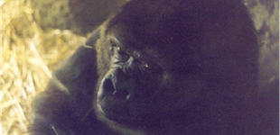

Le gorille des montagnes est la sous-espèce de gorille la plus rare. Le gorille des plaines orientales et le gorille des plaines occidentales constituent les deux autres sous-espèces. C'est le plus grand des primates.
|  |
|
Où vit-il ?Il vit dans la forêt tropicale humide qui couvre les monts Virunga à la frontière de l'Ouganda et du Rwanda, les pentes des montagnes boisées de l'Est du Zaïre. On peut l'observer au parc national des Virunga et dans la forêt de Bwindi
Combien en reste-il aujourd'hui ?Il ne reste que 110 000 gorilles, répartis dans le Gabon et ses alentours, dont seulement 700 gorilles des montagnes
De multiples dangers : La déforestation et le braconnage sont les principales causes de sa disparition progressive, y compris dans les réserves protégées. Les conséquences des guerres au Rwanda ont été aussi très graves pour cette espèce. De plus, les mineurs exploitent le coltan, un minerai utilisé pour les puces des téléphones mobiles, dans des territoires où se concentrent certaines espèces. Popularisé par l'œuvre de Diane Fossey, le gorille des montagnes reste l'espèce de gorille la plus menacée au monde.
A savoir : Au cours des deux dernières années, l'Agence spatiale européenne (ESA) et l'Organisation des Nations Unies pour l'Éducation, la Science et la Culture (UNESCO) ont utilisé des satellites dans leur combat contre le braconnage, afin de réaliser des cartes des zones inaccessibles protégées, où la nourriture serait suffisante